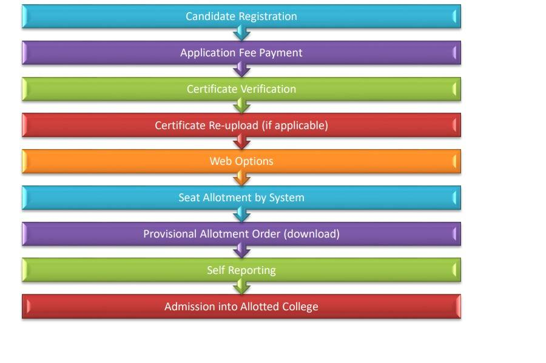
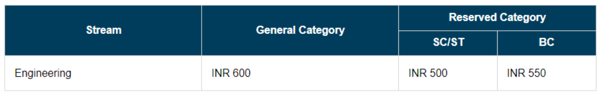
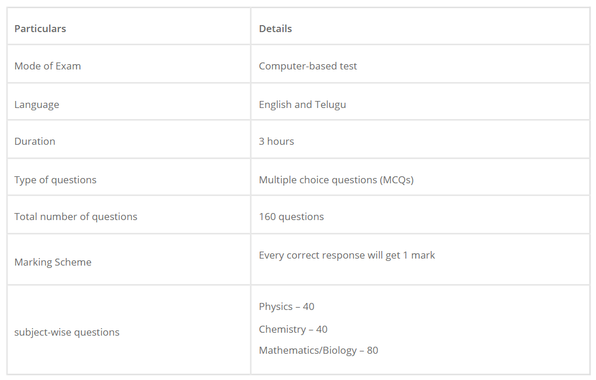

AP EAMCET (Andhra Pradesh Engineering Agricultural and Medical Common Entrance Test) has been renamed AP EAPCET, which stands for Andhra Pradesh Engineering Agricultural and Pharmacy Common Entrance Test. AP EAMCET is an entrance examination conducted by the Jawaharlal Nehru Technological University (JNTU), Kakinada on behalf of the Andhra Pradesh State Council of Higher Education (APSCHE) for admission into various professional courses offered in University/ Private Colleges in the state of Andhra Pradesh. The exam tests the candidate's knowledge and aptitude in various subjects such as physics, chemistry, biology, and mathematics. It is typically held in the month of May, and the results are used to determine the eligibility of candidates for admission to engineering, agriculture, and pharmacy programmes in colleges and universities in Andhra Pradesh.
AP EAMCET 2023 eligibility criteria are the conditions set by JNTU Kakinada on behalf of APSCHE for candidates seeking admission to engineering, medical and agriculture courses. To be eligible, candidates need to fulfil the requirements given below:
Candidates should be Indian Nationals or Persons of Indian Origin (PIO)/ Overseas Citizens of India (OCI).
Candidates must be Andhra Pradesh/Telangana state residents and should meet the local/non-local status requirements by Educational Institutes in Andhra Pradesh under admission regulations.
Candidates should have passed or appeared in the qualifying examination of intermediate or 10+2 level or any equivalent examination as recognised by the Board of Intermediate Education, Andhra Pradesh/ Telangana.
Candidates must have passed the qualifying examination and must have taken the following subjects in the 10+2 level i.e. Mathematics, Physics, and Chemistry or any of the optional subjects or relevant vocational subjects in the Engineering and Technology stream.
The exam conducting authority will activate a link to track the progress of the AP EAMCET application form on its website. The tracking system will be updated after 72 hours of completion of the application process.
The corrections can be done on the AP EAMCET 2023 application form during the correction window. The details on the application form are divided into two categories. The details in Category -1 can be changed only by sending an e-mail to apeapcet2022helpdesk@gmail.com. The details in Category -2 can be done by the candidate during the permitted periods.
The above details can be changed on the application form by sending supporting documents by mail. Corrections related to Category-1 items will be done at CONVENER, AP EAPCET-2023 Office, subject to thorough Verification of the Valid Documents and Approval by the Committee.
Corrections related to Category -2 in the Filled-in Online Application Form can be done by the candidate during the permitted period
However, an exact date to activate the AP EAMCET correction window 2023 is yet to be announced.
Check the admission process for AP EAMCET in the infographic shown below:
Aspirants are required to furnish essential information such as their full name, date of birth, email address, and mobile number, as well as present their qualifying examination hall ticket, amongst other details. The last step would be to choose a payment method, with online payment options including net banking, credit card, or debit card.
AP EAMCET exam pattern explains the basic structure of the question paper. By observing the exam pattern, candidates will get to know about the total number of questions, marking scheme, exam duration, etc. Check out more information below.
With good preparation, candidates can attempt a good number of questions in the exam. Candidates should make a concrete preparation strategy to crack the examination. Following are some AP EAMCET preparation tips , which can be followed to obtain good marks:
The AP EAMCET admit card for candidates was made available. Admit card is mandatory for entering the exam hall. Failure to present the admit card will disqualify candidates from taking the exam. The admit card will contain important information such as the candidate's name, roll number, exam date, exam venue, and date of birth. Candidates are advised to keep the admit card safe until the admission process is complete.
To download the AP EAMCET admit card, candidates can follow these simple steps:
AP EAMCET question paper will be released by APSCHE a few days after the conclusion of the exam. It can be used to analyse the difficulty level of the exam. Candidates can download AP EAMCET previous years’ question paper PDF to practise the questions and check their preparation level. It comprises a total of 160 questions from different subjects. The AP EAMCET previous year's question papers give applicants a glimpse into the questions included in the past year's exams. The candidates can make a summary of the important topics or the most important questions from the previous few years.
It shall comprise correct answers to the questions asked in the examination. The answer key for each shift of AP EAMCET will be made available separately in pdf format. The official question paper for AP EAMCET 2023 will also be released by the authorities together with the answer key. Candidates can use AP EAMCET answer key to check their total marks, rank and to speculate the college for admission. In case of any objections, candidates can also challenge the answer key.
AP EAMCET result will be declared soon after the exam. The AP EAMCET result will be announced in June, tentatively. The result will be announced in online mode. Candidates are required to log in through their credentials such as application number and roll number to check the result. Candidates who will pass the exam will be called for participating in the counselling.
The official rank card for the AP EAMCET will be made available on the official website by the authorities. To download their rank cards, candidates will need to use their registration number, hall ticket number, and date of birth. Obtaining the rank card is mandatory as it is necessary for the counselling process. It's important to note that the rank obtained through the AP EAMCET exam is solely based on the candidate's score in the AP EAMCET and is valid only for admissions in the academic year
The Andhra Pradesh State Council of Higher Education (APSCHE) will conduct the AP EAMCET counselling for the candidates who will appear for the entrance test. The authority will release the AP EAMCET seat allotment result for each round of counselling. APSCHE conducts counselling online to complete the admission process. AP EAMCET counselling process encompasses various stages like payment of processing fee, check verification status, candidate registration, option entry, seat allotment and reporting to the allotted college.
AP EAMCET Cut off will be released by APSCHE for all categories after the declaration of the result. The qualifying percentage will be 25% of the maximum marks considered for the ranking. However, for candidates belonging to Scheduled Caste (SC) and Scheduled Tribe (ST), no minimum qualifying mark is prescribed. The admission will be limited to the extent of seats reserved for the ST/SC categories.
Important Instructions NCC Merit List CAP Merit List Sports & Games Merit List Bharath Scouts & Guides G.O. List of Sports & Games Local status of students migrated from Telangana to AP
Engineering Stream (E) Syllabus Agriculture & Pharmacy Stream (AP) Syllabus